摘要： React开发神器。
下列工具中的重要性与排序无关。
有没有想过你的应用程序的哪些包或哪部分代码所占总大小的多少? Webpack Bundle Analyzer可以帮助咱们分析。
Webpack Bundle Analyzer创建一个实时服务器，并提供依赖包交互式树形图可视化。 通过这个工具包，可以看到所渲染文件的位置，gzip大小，解析大小以及所父子级之间详情。
这个工具的好处是，可以根据你所看到来优化你的React应用。
收下是它生成的一个分析图：
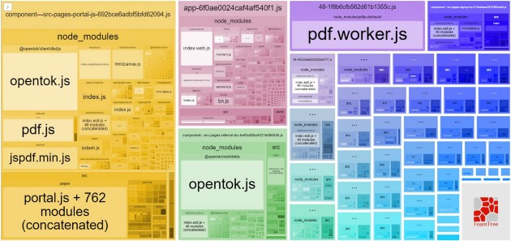
可以清楚地看到pdf包大小占用应用程序是最多的，同时也是占用分析图片最大比例，这对于咱们来说是所看即所得效果。
然而，生成分析图空间有限，你还可以传递一些有用的选项来更详细地查看它，比如generateStatsFile: true，还可以选择生成一个静态HTML文件，可以将其保存在开发环境之外的某个地方，以供以后使用。
React-Proto 是一个面向开发人员和设计人员的原型工具。这是一个桌面软件，所以在使用之前你必须下载并安装这个软件。
以下是使用方式一个简单演示：
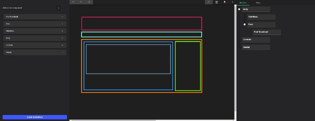
该应用程序允许你声明props及其types，在树中查看组件，导入背景图像，将它们定义为有状态或无状态，定义其父组件将是什么，放大/缩小，以及将原型导出到新的或现有项目。
该应用程序似乎更适合Mac用户，但它仍适用于Windows用户。
完成用户界面后，可以选择导出到现有项目或新项目。 如果你选择导出到现有项目并选择根目录，它会将它们导出到./src/components，如下所示：
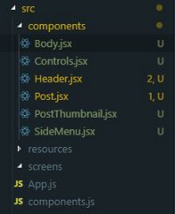
随着React hook的发布，这个应用程序需要更新做更多的工作。当然，开源是这个应用程序的好处，因为它使它有可能成为未来流行的开源存储库列表。
Why Did You Render 猴子补丁React通知你有关可避免的重新渲染的信息。
猴子补丁: 这个叫法起源于Zope框架，大家在修正Zope的Bug的时候经常在程序后面追加更新部分，这些被称作是“杂牌军补丁(guerilla patch)”，后来guerilla就渐渐的写成了gorllia((猩猩)，再后来就写了monkey(猴子)，所以猴子补丁的叫法是这么莫名其妙的得来的。
猴子补丁主要有以下几个用处：
这非常有用，不仅可以指导咱们修复项目的性能，还可以帮助你理解React是如何工作的。而且，当你更好地理解React的工作原理时，你就会成为更好的React开发人员。
通过声明一个额外的静态属性whyDidYouRender并将其值设置为true，可以将侦听器附加到任何自定义组件
import React from 'react'
import Button from '@material-ui/core/Button'
const Child = (props) => <div {...props} />
const Child2 = ({ children, ...props }) => (
<div {...props}>
{children} <Child />
</div>
)
Child2.whyDidYouRender = true
const App = () => {
const [state, setState] = React.useState({})
return (
<div>
<Child>{JSON.stringify(state, null, 2)}</Child>
<div>
<Button type="button" onClick={() => setState({ hello: 'hi' })}>
Submit
</Button>
</div>
<Child2>Child #2</Child2>
</div>
)
}
export default App这样做之后，在控制台才会打印令人恼人冗长警告：
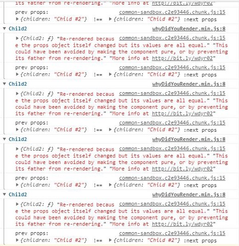
不要认为这是错误的提示，把它当成一件好事。 利用那些烦人的消息，这样你就可以修复那些浪费的重新渲染。
大家都知道，Create React App是创建 React项目的最快方式（开箱即用）。
还有什么比 npx create-react-app <name>更简单的呢
咱们还有些人可能不知道的是如何使用CRA创建TypeScript项目，这个也很简单，只需要在末尾添加--typescript 即可：
npx create-react-app <name> — typescript这样可以省去手动将TypeScript添加到CRA创建项目中的麻烦。
React Lifecycle Visualizer是一个npm包，用于跟踪和可视化任意React组件的生命周期方法。
与 Why Did You Render 工具类似，你可以选择任何组件来启动生命周期可视化工具：
import React from 'react'
import {
Log,
VisualizerProvider,
traceLifecycle,
} from 'react-lifecycle-visualizer'
class TracedComponent extends React.Component {
state = {
loaded: false,
}
componentDidMount() {
this.props.onMount()
}
render() {
return <h2>Traced Component</h2>
}
}
const EnhancedTracedComponent = traceLifecycle(TracedComponent)
const App = () => (
<VisualizerProvider>
<EnhancedTracedComponent />
<Log />
</VisualizerProvider>
)运行结果，如下所示：
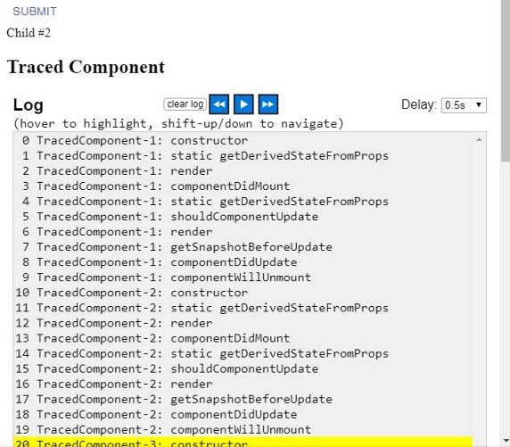
但是，其中一个缺点是它目前仅适用于类组件，因此尚不支持 Hook。
Guppy 是React的一个友好且免费的应用程序管理器和任务运行器，它在桌面上运行且跨平台的，你可以放心用。
它为开发人员经常面临的许多典型任务(如创建新项目、执行任务和管理依赖项)提供了友好的图形用户界面。
Guppy 启动后的的样子
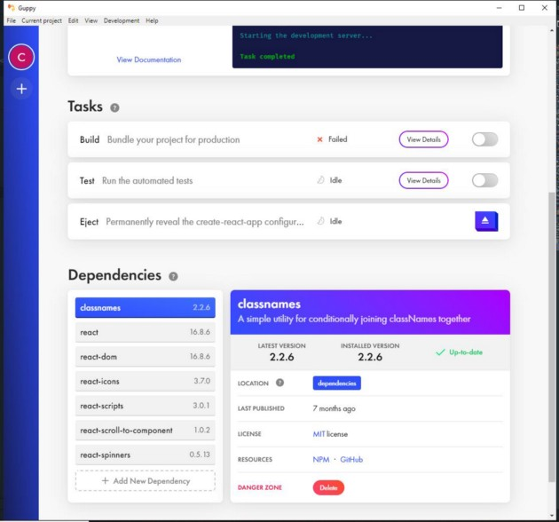
react-testing-library 是一个很棒的测试库，编写单元测试时，它会让你感觉很好。这个包提供了React DOM测试实用程序，鼓励良好的测试实践。
此解决方案旨在解决测试实现细节的问题，而不是测试React组件的输入/输出，就像用户会看到它们一样。
这是react-test -library解决的一个问题，因为理想情况下，你只希望您的用户界面能够正常工作，并最终正确地渲染出来。
如何将数据获取到这些组件并不重要，只要它们仍然提供预期的输出即可。
以下是使用此库进行测试的示例代码：
// Hoist helper functions (but not vars) to reuse between test cases
const renderComponent = ({ count }) =>
render(
<StateMock state={{ count }}>
<StatefulCounter />
</StateMock>,
)
it('renders initial count', async () => {
// Render new instance in every test to prevent leaking state
const { getByText } = renderComponent({ count: 5 })
await waitForElement(() => getByText(/clicked 5 times/i))
})
it('increments
count', async () => {
// Render new instance in every test to prevent leaking state
const { getByText } = renderComponent({ count: 5 })
fireEvent.click(getByText('+1'))
await waitForElement(() => getByText(/clicked 6 times/i))
})React Developer Tools是一个扩展插件，允许在Chrome和Firefox Developer Tools中检查React的组件层次结构。
这是React开发中最常见的扩展插件，并且是React开发人员可以用来调试其应用程序的最有用的工具之一。
通过Bit可以看到数以千计的开源组件，并允许还可以使用它们来构建项目。
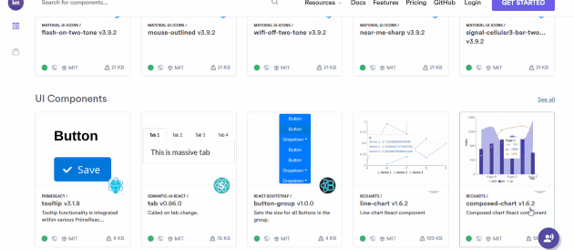
列表中有很多很多React组件可供咱们使用，包括选项卡，按钮，图表，表格，导航栏，下拉列表，加载微调器，日期选择器，面包屑，图标，布局等。
Storybook 是一个轻松地构建UI组件的库。该工具启动一个实时开发服务器，支持开箱即用的热重载，你可以在其中独立地实时开发React组件。
这足以作为普通文档页面：
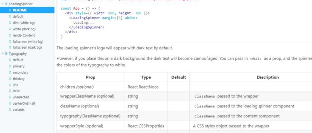
代码部署后可能存在的BUG没法实时知道，事后为了解决这些BUG，花了大量的时间进行log 调试，这边顺便给大家推荐一个好用的BUG监控工具 Fundebug。
你有没有想过你的应用程序在流程图中的样子？ React Sight允许你通过展示整个应用程序的实时组件层次结构树来可视化React应用程序。
它还支持react-router，Redux以及React Fiber。
使用此工具，您可以将鼠标悬停在节点上，这些节点是指向与树中组件直接相关的组件的链接。
如果在查看结果时遇到问题，可以在地址栏中输入chrome:extensions ，查找“React Sight”框，然后单击“Allow access to file URLs”开关，如下所示：
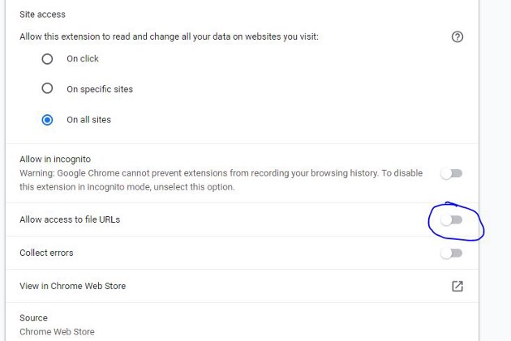
React Cosmos是一个用于创建可重用React组件的开发工具。
它扫描项目中的组件，并使你能够:
localStorage等)。CodeSandbox一个在线编辑器，可以在上面创建Web应用程序并实行运行。
CodeSandbox 最初只在早期阶段支持React，但它们现在已经扩展到Vue和Angular等库的其他入门模板。
他们还支持使用常见的静态站点生成器（如Gatsby或Next.js）创建项目来启动React Web项目。
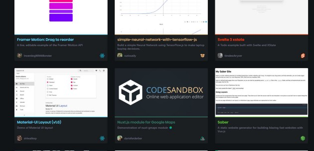
React Bits是一个React模式、技术、技巧和技巧的集合，所有这些都以类似于在线文档的格式编写，你可以在同一个选项卡上快速访问不同的设计模式和技术、反模式、样式、UX变体以及其他与React相关的有用材料。
GitHub repo，目前有10083颗星星。
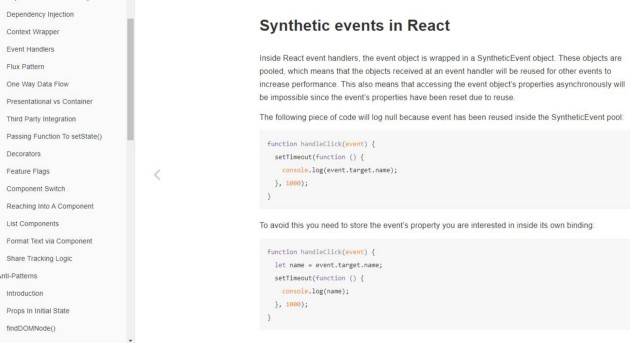
folderize是一个VS Code 扩展。 它允许您将组件文件转换为组件文件夹结构。 React 组件仍然是一个组件，只是转换为一个目录。
例如，假设正在创建一个React组件，该组件将文件作为props来显示有用的信息，如元数据
元数据组件的逻辑占用了大量的行，因此咱们决定将其拆分为单独的文件。 但是，当这样做时，咱们就有两个相互关联的文件。
所以，就有有一个大概如下所示的目录：
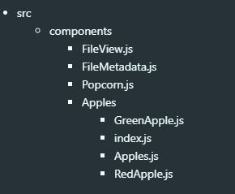
咱们可能想要将FileView.js和filemetada.js抽象到目录结构中，就像Apple一样，尤其是考虑添加更多与FileScanner.js等文件相关的组件时。
这就是folderize为咱们所做的，这样组件们就可以得到一个类似的结构
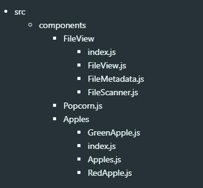
React starter projects 是一个依赖库列表，可以在上面快速你需要要的依赖库的名称并可以跳转对应的 github 上。
一旦看到一个你喜欢的入门项目，你就可以简单地克隆这个库，并根据你的需要进行修改。
但是，并不是所有的依赖库都是通过克隆使用，因为其中一些库需要通过安装形式，才能成为项目的依赖项。
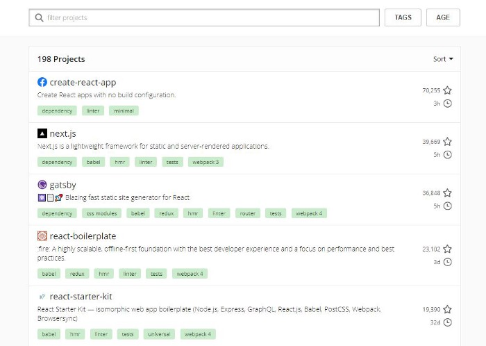
这可能是开发工具包中最重要的工具。 Highlight Updates是React DevTools扩展的一个特性，可以查看页面中的哪些组件正在不必要地重新渲染。
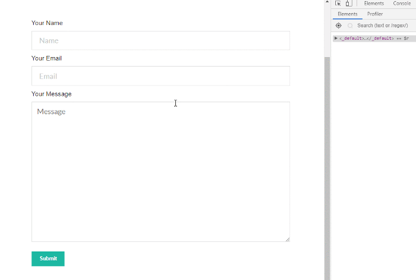
它可以帮助你在开发页面时是更容易发现一些性能问题，因为它们会使用橙色或红色对严重的重新渲染问题进行着色。
React Diff Viewer是一个简单而美观的文本差异对比工具 这支持分割视图，内嵌视图，字符差异，线条突出显示等功能。
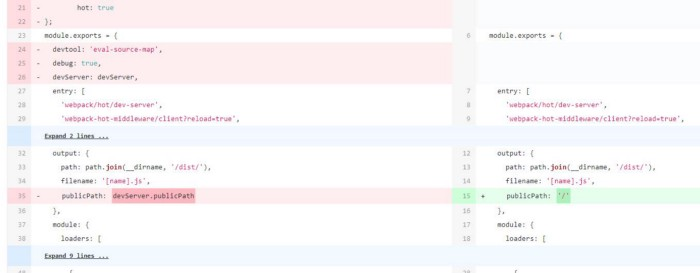
JS.coach 是我最常用来与 React 有需要的库的网站。从这个页面可以找到需要的任何东西。
它快速、简单、不断更新，并且总是能给我所有项目所需的结果。最近还添加了React VR，非常棒。
Awesome React开源库是一个与React相关的很棒的列表。
我可能会忘记其他网站并单独从这个链接学习React。 因为可以在此找到批量有用的资源，这些资源肯定会帮助我们构建出色的React应用程序！
Proton Native为咱们提供了一个React环境来构建跨平台的本机桌面应用程序。
它是Electron的替代产品，具有一些简洁的功能，包括：
代码部署后可能存在的BUG没法实时知道，事后为了解决这些BUG，花了大量的时间进行log 调试，这边顺便给大家推荐一个好用的BUG监控工具 Fundebug。
Fundebug专注于JavaScript、微信小程序、微信小游戏、支付宝小程序、React Native、Node.js和Java线上应用实时BUG监控。 自从2016年双十一正式上线，Fundebug累计处理了20亿+错误事件，付费客户有阳光保险、核桃编程、荔枝FM、掌门1对1、微脉、青团社等众多品牌企业。欢迎大家免费试用！